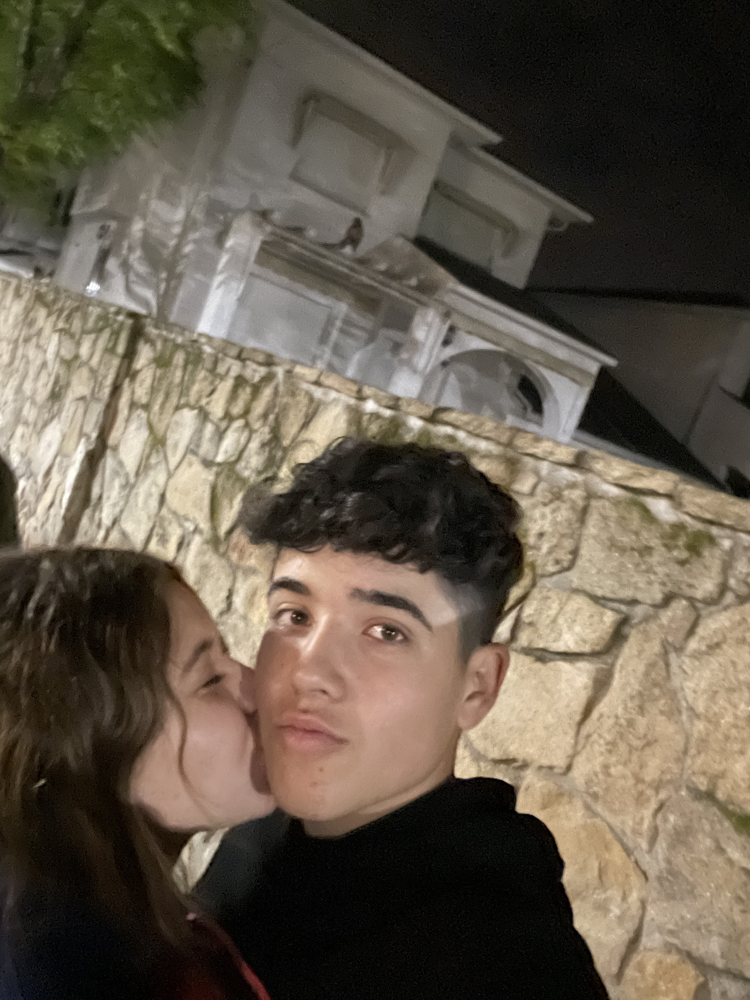
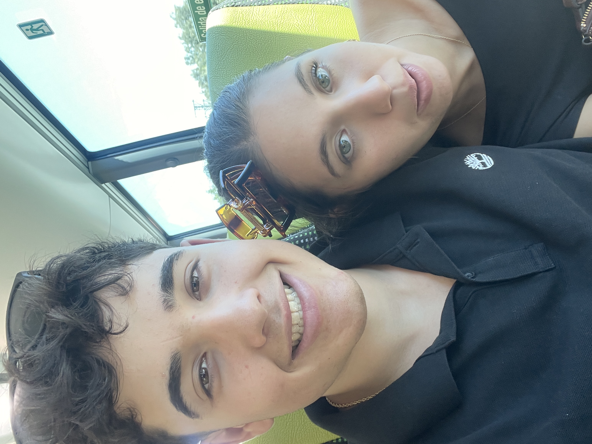
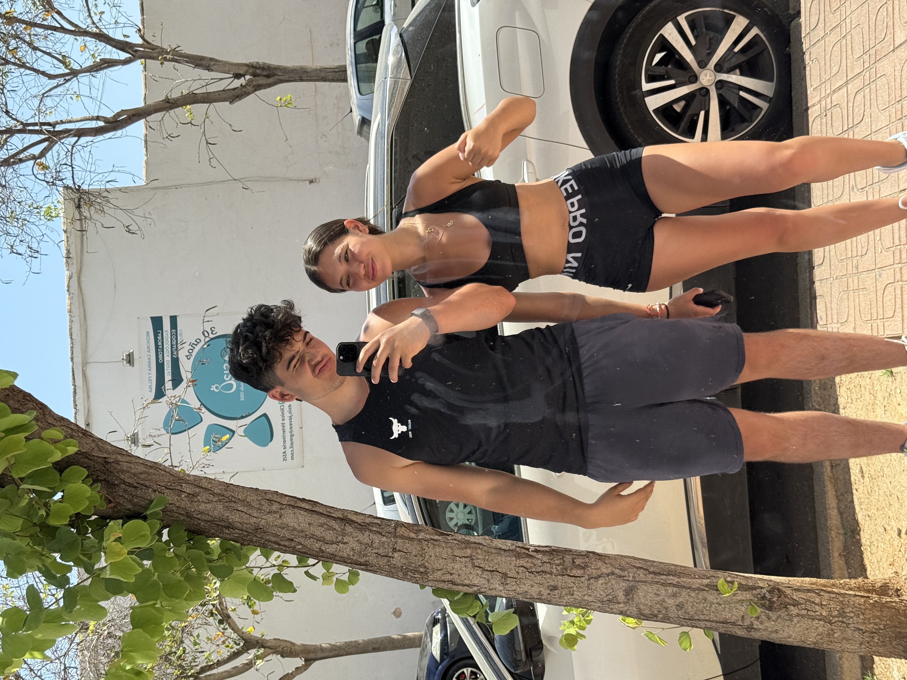
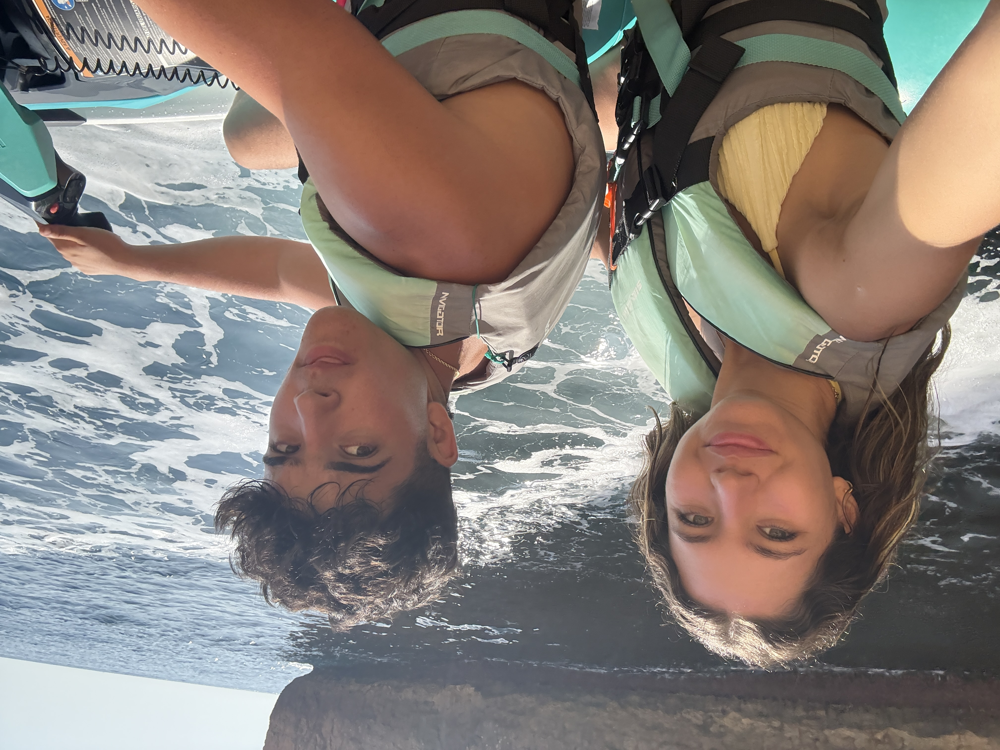
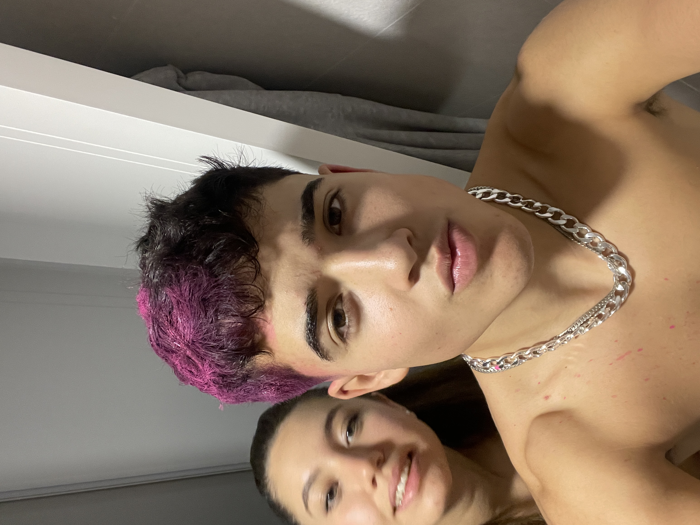
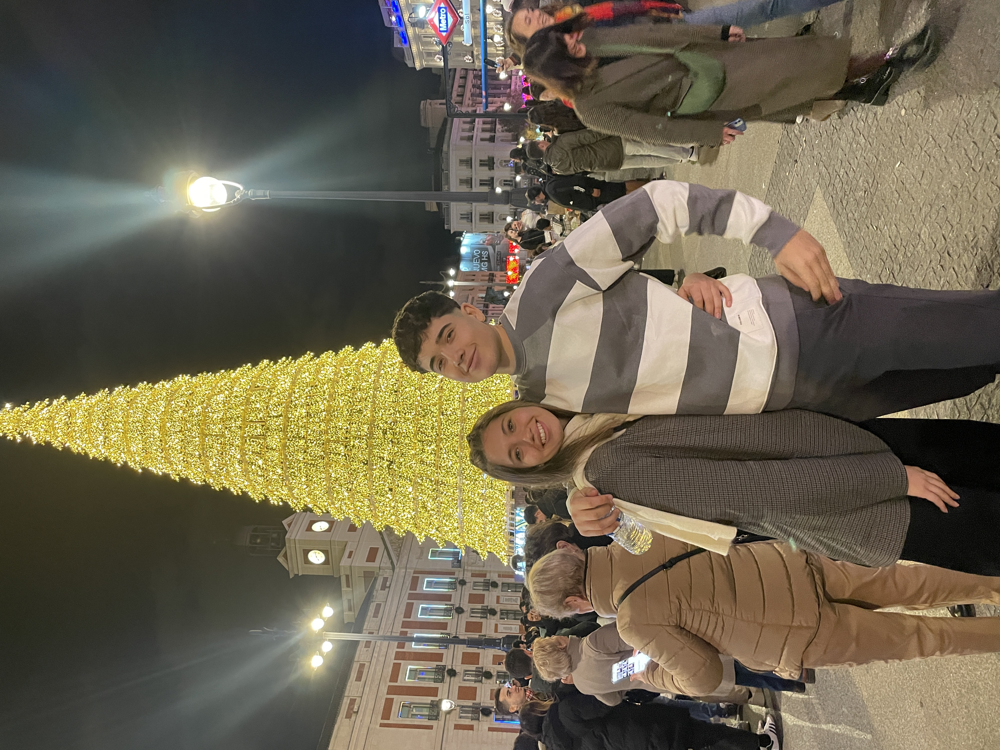
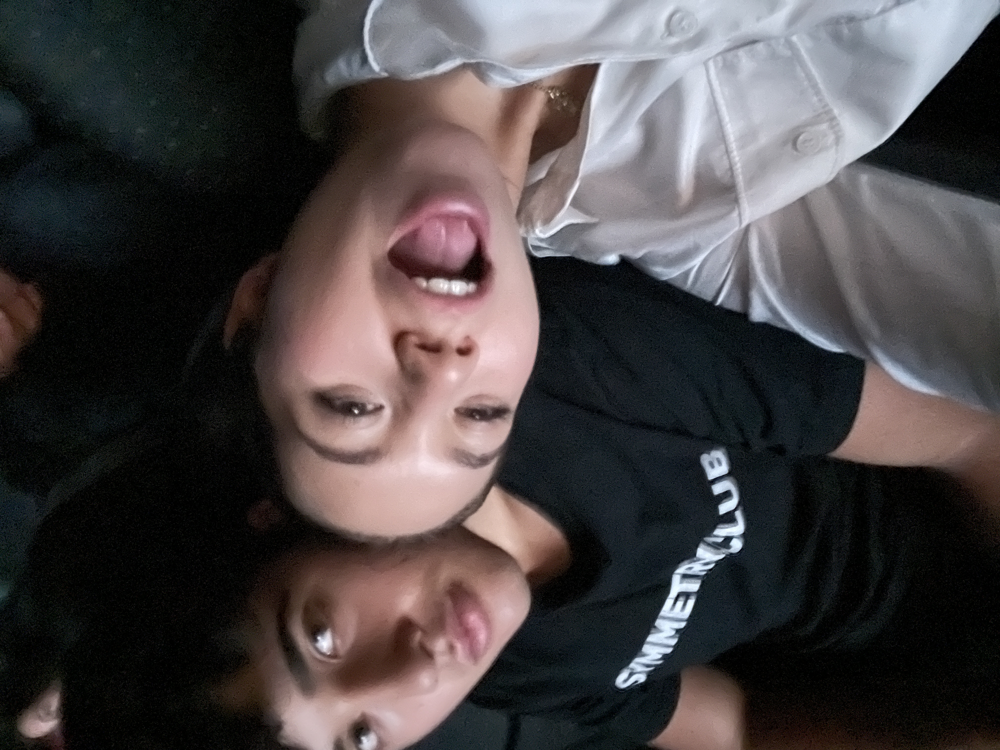

Todo comenzó sin que lo imagináramos. Dos caminos que se cruzaron y crearon algo único.

Todo comenzó sin que lo imagináramos. Dos caminos que se cruzaron y crearon algo único.
Desde nuestras primeras conversaciones hasta los silencios que también hablan, cada instante contigo ha sido especial.
Gracias por tu risa, tu paciencia, tu forma de mirarme y de hacerme sentir en casa.
Me haces reír incluso cuando no lo intento. Eres esa paz que no sabía que necesitaba.

Me haces mejor. Me inspiras, me motivas, me completas.

Y aunque no lo diga todo el tiempo, cada día contigo es un regalo.
Quiero construir contigo un millón de recuerdos más.
Porque cuando pienso en el futuro, tú estás en él.
Este es solo el principio de un viaje eterno.
Gracias por existir en mi vida. Por ser tú.
